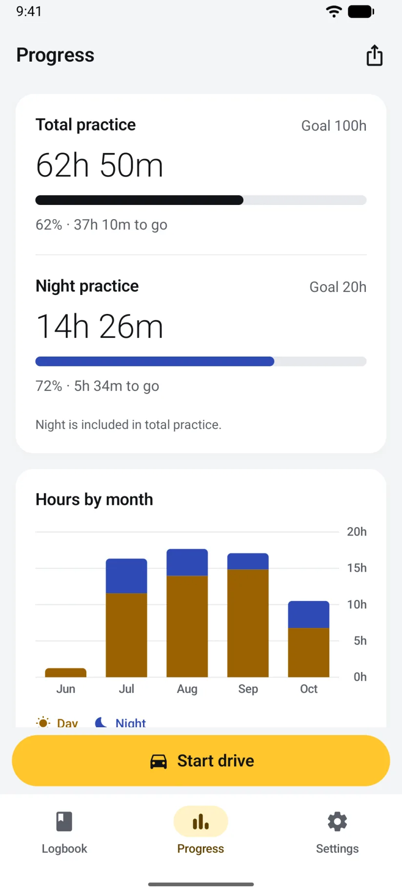
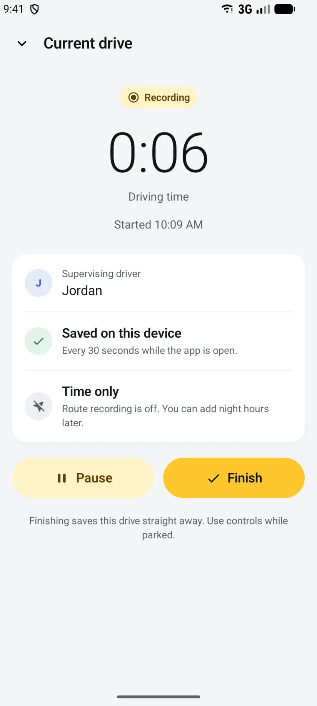
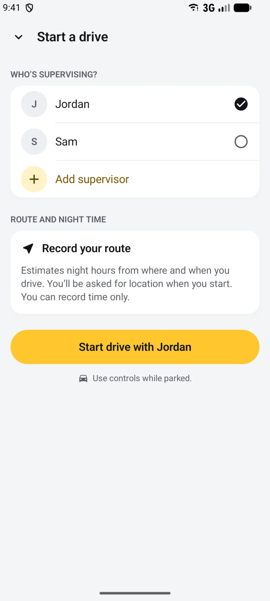
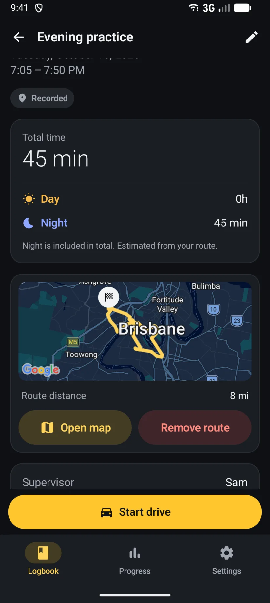

One tap to log a drive
Pick who's supervising and start. The timer, the route and the supervisor are saved together, and the drive is written to your phone every 30 seconds. If the app closes, the drive is recovered at the next launch.
Driving Hour Tracker for Android
Log your supervised driving hours on any Android phone or tablet. One tap records each practice drive, night hours are worked out from sunset along your route, every drive goes on Google Maps, and a tidy PDF logbook report is always ready. No account, no ads, and the logbook stays on your phone.
On iPhone? See the app for iPhone, iPad and Apple Watch.
The app
Material 3, the L-plate look, a Start drive button that's never more than a tap away, and dark mode. Captured on a phone; tablets and unfolded foldables show the logbook and the open drive side by side.




The logbook
Everything the iPhone app does with a drive, the Android app does the same way. Same rules, same reports, same backup file.
Pick who's supervising and start. The timer, the route and the supervisor are saved together, and the drive is written to your phone every 30 seconds. If the app closes, the drive is recovered at the next launch.
Sunset and sunrise along your recorded route split every drive into day and night. Night is always shown inside the total, never on top of it, and you can edit the minutes on any drive.
See where each drive went, with the distance on every one. Routes stay in your logbook and are left out of reports. Record time only whenever you'd rather not share your location.
Set the total and night hours you're aiming for: a 120 hours logbook for New South Wales or Victoria, 100 for Queensland, a 50-hour permit log for a US state, or your own number. The front page shows what's left.
Every drive with its date, times, night hours and supervisor, as a PDF for your records or a spreadsheet. Import a spreadsheet of drives you logged somewhere else.
Save a backup with everything, routes included, and restore it on any Android phone or tablet. A backup made on iPhone restores on Android, and the other way round.
Built for Android
The iPhone app has Siri, Control Center and a Live Activity. The Android app has the Android ways of doing the same things.
Your total and night hours against your goals, your last drive, and a Start drive button. While you record it shows the live timer and opens the current drive.
Add Practice drive to the notification shade. One tap starts a drive with your usual supervisor; while recording, one tap finishes it.
While a drive is recording, an ongoing notification shows the timer and your progress, with Pause and Finish right there. On Android 16 it's a live update.
Press and hold the app icon to start practice, log a past drive, open your progress, or start with a particular supervisor.
Choose your car once. When your phone connects, the app starts a drive or asks you first, and finishes it when the car disconnects. No background location needed.
Your hours and recent drives on your watch, a supervisor picker, and start, pause and finish while the phone is nearby. A tile and complications for your progress, night hours and a Start button.
Permissions, plainly
Nothing is needed to time a drive by hand. Each permission is asked for when you first use the feature that needs it, and each can be turned off again in Android's app settings.
Only while a drive is recording, to draw the route and work out night hours. The app never asks for "Allow all the time" and uses no location between drives.
If you turn on driving suggestions: to notice when you're in a vehicle and when the driving stops, so the app can suggest a drive and offer to finish one. Nothing is stored.
So the live timer can show while you record, and so a driving suggestion or a car start can ask you first. Without it recording still works; the timer just stays hidden.
Only if you set up Start from car Bluetooth, so Android can tell the app when the car you chose connects and disconnects. The app doesn't scan for anything else.
Read the privacy policy for the detail. There are no accounts, no analytics and no ads on either platform.
Android and iPhone
The Android app is a full port of the iPhone app, with the same rules and the same backup file. Three things are iPhone-only, and the Android app has its own extras in their place.
On Android the logbook lives on one phone. Save a backup to keep a copy or move it to another device.
There are no invitations on Android. Hand a supervisor the PDF report, or a backup to restore in their own app.
Android gets the widget, the Quick Settings tile, app shortcuts and the notification timer instead.
Pair the car once and a drive can start and finish with the connection.
Saved every 30 seconds, recovered after a crash, flagged for review when something's unsure. The PDF and CSV are identical.
One file format. A backup from either platform restores on the other, routes and all.
The full feature-by-platform table is on the home page.
Android questions
Any phone or tablet running Android 14 or later. Tablets and unfolded foldables show the logbook and the open drive side by side. A Wear OS watch paired to the phone can run the companion app.
No. On Android the logbook stays on the phone: there is no iCloud sync, no sharing and no invitations. To keep a copy or move it, save a backup file; to show a supervisor your hours, give them the PDF report or a backup to restore in their own app.
Yes. On the iPhone, open Settings, Export and backup, and save a backup. Open that file with Driving Hour Tracker on the Android phone and choose Restore. Everything comes across, routes included, and a backup made on Android restores on iPhone the same way. Step by step on the support page.
Location, while a drive is recording, for the route and night hours; Physical activity, if you turn on driving suggestions, to notice when you drive and when you stop; Notifications, so the live timer can show while you record; and Nearby devices, only if you set up Start from car Bluetooth. None are needed to time a drive by hand. What each one is for.
The Notifications permission was declined. Recording still works and the drive is still saved every 30 seconds, but Android hides the timer. Allow notifications for Driving Hour Tracker in Android's app settings and it appears on the next drive.
In Settings, open Start from car Bluetooth and choose your car once from the list Android shows. From then on, when your phone connects to the car the app either starts a drive with your usual supervisor or shows a notification asking first, whichever you chose, and finishes the drive when the car disconnects. A drive the car starts records time only until you open the app; choose Ask me first to get the route as well.
No. The phone does the recording; the watch shows your hours and sends start, pause and finish to it. Keep the phone nearby and connected. If the watch can't reach the phone it says so, and the command isn't queued.
Yes. Recording, the timer, night estimates, the logbook, reports and backups all work offline. Only the Google Maps picture behind a route needs a connection to load; the route itself is saved either way.
Driving Hour Tracker is on Google Play for Android phones, tablets and Wear OS, and on the App Store for iPhone, iPad and Apple Watch.